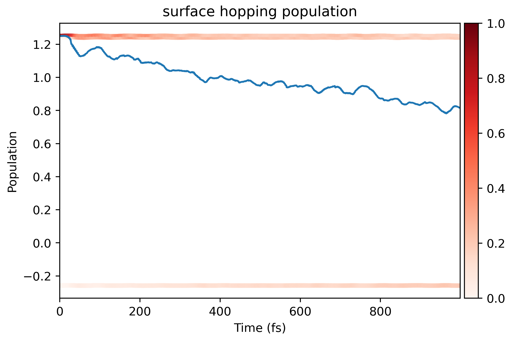

Surface Hopping
This is the "literal" running process to simulate the dynamics of carriers. It ultilizes the Fewest switches surface hopping (FSSH) algorithm under the classical path approximation (CPA) to estimate the real-time population of each state. The hopping probability reads
\begin{equation} P_{j\to k}(t, t+\Delta t) = \max \qty{-2 \Delta t \qty( -\frac{\Re(\rho_{jk} D_{jk})}{\rho_{jj}} + \frac{ \Re(\rho_{jk} H_{jk}^{LMI} / i\hbar)}{\rho_{jj}} ), 0} \end{equation}
The formalism of FSSH is consistent with previous studies:
- J. Chem. Theory Comput. 2013, 9, 11, 4959–4972
- J. Chem. Theory Comput. 2014, 10, 2, 789–804
- WIREs Comput Mol Sci. 2019;9:e1411.
Help message
$ namd_lmi surfhop --help
Perform the surface-hopping process with given Hamiltonian file and config file
Usage: namd_lmi surfhop [OPTIONS]
Options:
-n, --nthreads <NTHREADS>
Number of threads for parallel calculation.
If 0 is set, it will fall back to the number of logic CPU cores of you machine.
[default: 0]
-c, --config <CONFIG>
Config file name.
Aliases: "cfg", "conf".
--generate <GENERATE>
Generate auxiliary files for the calculation and analysis.
The surface-hopping will not run if this flag is set.
Alias: "gen".
Possible values:
- config-template: Generate config template for Hamiltonian generation. Aliases: "config", "cfg" and "conf"
- inistep.py: Generate Python script to help append `inistep` field. Aliases: "inistep" and "ini"
- postprocess-template: Generate post-process scripts for surface-hopping analysis. Aliases: "post-process", "postprocess", "pp"
--collect-results <COLLECT_RESULTS>
Collect results produced by the surface-hopping.
The surface-hopping will not run if this flag is set.
Aliases: "collect", "cr"
-h, --help
Print help (see a summary with '-h')
Procedures
-
Generate configuration file, and auxiliary Python script.
$ namd_lmi surfhop --generate conf 2024-11-20 20:59:21 [ INFO] Global logger initialized with targets being stderr and "./globalrun.log" 2024-11-20 20:59:21 [ INFO] writing `03_surfhop_config_template.toml` ... 2024-11-20 20:59:21 [ INFO] Writing `inisteps.py` ... 2024-11-20 20:59:21 [ INFO] Time used: 13.977617ms $ namd_lmi surfhop --generate pp 2024-11-20 20:59:30 [ INFO] Global logger initialized with targets being stderr and "./globalrun.log" 2024-11-20 20:59:30 [ INFO] Writing `surfhop_plot.py` ... 2024-11-20 20:59:30 [ INFO] Time used: 1.534094ms -
Modify the Surface Hopping configuration file
#### NAMD-lmi config for surface-hopping calculation #### #### YOUT NEED TO CHANGE THE PARAMETERS IN THE FOLLOWING TO FIT YOUR SYSTEM #### hamil_fname = "HAMIL.h5" namdtime = 1000 nelm = 10 ntraj = 10000 shmethod = "FSSH" outdir = "outdir" detailed_balance = "DependsOnEField" smearing_method = "LorentzianSmearing" smearing_sigma = 0.01 smearing_npoints_per_eV = 500 iniband = "0" inisteps = [ 1 , 2 , 3 , ]Explanation of each field:
-
hamil_fnamestring: Hamiltonian file name. -
namdtimeinteger: Total NAMD simulate steps. -
nelminteger: How many electronic steps within each ionic step.For
propmethod = "FiniteDifference"in Hamiltonian, this field is required to be large, i.e.nelm = 1000. Otherwise,nelm = 10is enough. -
ntrajinteger: How many times to hop for each MD trajectory. -
shmethodstring: Which surface hopping method to use. Only "FSSH" is available for now. -
outdirstring: Output directory where the results will be written in. This field cannot be current dir ".". -
detailed_balancestring: When the "detailed balance" factor \(B = e^{\Delta E / k_B T}\) applied on the upward hopping (hopping from lower energy to higher energy) probability.Available options:
- "Always": Always apply factor \(B\).
- "DependsOnEfield": Apply factor \(B\) only when external field is present, to allow upward hoppings.
- "NacOnly": Apply factor \(B\) only for NAC driven upward hoppings, meaning that only phonon (plus SOC) induced upward hoppings are restricted.
- "Never": Never apply this factor, no limitation on all upward hoppings.
-
smearing_methodstring: Smearing function for phonon spectra calculation.Available options:
- "LorentzianSmearing"/"Lorentzian"/"lorentzian"
- "GaussianSmearing"/"Gaussian"/"gaussian"
-
smearing_sigmafloat: Literal smearing width of smearing functions. -
smearing_npoints_per_eVinteger: Point density for spectra data. -
inibandstring: Bands where the electrons initially lie on. The indices is consistent withnacandhamil. Format is same asbasis_list.For example, if
basis_list = "215..220", and we want the electron on band 220 initially, this field should beiniband = "220"; if we want three electrons on band 215, 216 and 217 respectively, the this field should beiniband = "215..217". -
inistepslist of integer: Initial step index for each NAMD sample trajectory.There are only 3 samples as shown in
inistepsfield, which is far from enough. Runpython3 inisteps.py 03_surfhop_config_template.toml 1999 100to generate 100 random initial configurations for the surface hopping method. Then delete the originalinistepsand it finally reads... ... smearing_npoints_per_eV = 500 iniband = 0 ## Appended by inisteps.py @ 2024-11-20 22:42:28 inisteps = [ 13 , 64 , 78 , ... ... 1965 , 1982 , 1993 ]
-
-
Run the surface hopping.
$ namd_lmi surfhop -c 03_surfhop_config_template.toml
2024-11-21 10:08:20 [ INFO] Global logger initialized with targets being stderr and "./globalrun.log"
2024-11-21 10:08:20 [ INFO]
+----------------------------------------------------------------------+
| |
| _ _ __ __ _____ _ __ __ _____ |
| | \ | | /\ | \/ || __ \ | | | \/ ||_ _| |
| | \| | / \ | \ / || | | | ______ | | | \ / | | | |
| | . ` | / /\ \ | |\/| || | | ||______|| | | |\/| | | | |
| | |\ | / ____ \ | | | || |__| | | |____ | | | | _| |_ |
| |_| \_|/_/ \_\|_| |_||_____/ |______||_| |_||_____| |
| |
+----------------------------------------------------------------------+
Welcome to use namd!
current version: 0.1.0
git hash: a51d001
author(s): Ionizing
host: x86_64-unknown-linux-gnu
built time: 2024-11-20 16:02:14 +08:00
2024-11-21 10:08:20 [ INFO] Prepare to run surface-hopping in 0 threads ...
2024-11-21 10:08:20 [ INFO] Log and output files will be stored in "outdir" .
2024-11-21 10:08:20 [ INFO] Got Surface Hopping config:
#### NAMD-lmi config for surface-hopping calculation ####
#### YOUT NEED TO CHANGE THE PARAMETERS IN THE FOLLOWING TO FIT YOUR SYSTEM ####
hamil_fname = "HAMIL.h5"
namdtime = 1000
nelm = 10
ntraj = 10000
shmethod = "FSSH"
outdir = "outdir"
detailed_balance = "DependsOnEField"
smearing_method = "LorentzianSmearing"
smearing_sigma = 0.01
smearing_npoints_per_eV = 500
iniband = 220
inisteps = [
13 ,
64 ,
78 ,
...
...
1965 ,
1982 ,
1993 ,
]
2024-11-21 10:08:20 [ INFO] Linking Hamiltonian file "HAMIL.h5" to "outdir"
2024-11-21 10:08:20 [ INFO] Writing electric field source file to efield.rhai ...
2024-11-21 10:08:20 [ INFO] Writing electric field to "outdir/EAFIELD.txt" ...
2024-11-21 10:08:20 [ INFO] Running surface hopping with namdinit = 81 ...
2024-11-21 10:08:20 [ INFO] Running surface hopping with namdinit = 625 ...
2024-11-21 10:08:20 [ INFO] Running surface hopping with namdinit = 896 ...
...
...
2024-11-21 10:08:22 [ INFO] Running surface hopping with namdinit = 457 ...
2024-11-21 10:08:22 [ INFO] Running surface hopping with namdinit = 478 ...
2024-11-21 10:08:22 [ INFO] Running surface hopping with namdinit = 430 ...
2024-11-21 10:08:22 [ INFO] Collecting results ...
2024-11-21 10:08:22 [ INFO] Processing "outdir/result_0013.h5" ...
2024-11-21 10:08:22 [ INFO] Processing "outdir/result_0081.h5" ...
2024-11-21 10:08:22 [ INFO] Processing "outdir/result_0925.h5" ...
...
...
2024-11-21 10:08:23 [ INFO] Processing "outdir/result_1872.h5" ...
2024-11-21 10:08:23 [ INFO] Processing "outdir/result_0689.h5" ...
2024-11-21 10:08:23 [ INFO] Processing "outdir/result_1529.h5" ...
2024-11-21 10:08:23 [ INFO] Collecting done. Writing to "outdir/averaged_results.h5" ...
2024-11-21 10:08:23 [ INFO] Time used: 3.848758855s
- Visualize results
Generate the visualization script and then run it.
$ namd_lmi surfhop --generate pp
2024-11-21 10:12:03 [ INFO] Global logger initialized with targets being stderr and "./globalrun.log"
2024-11-21 10:12:03 [ INFO] Writing `surfhop_plot.py` ...
2024-11-21 10:12:03 [ INFO] Time used: 1.444398ms
$ cd outdir && python3 ../surfhop_plot.py
03_surfhop_config_template.toml result_0282.h5 result_0625.h5 result_0859.h5 result_1240.h5 result_1656.h5
averaged_results.h5 result_0291.h5 result_0669.h5 result_0896.h5 result_1263.h5 result_1658.h5
EAFIELD.txt result_0293.h5 result_0680.h5 result_0925.h5 result_1297.h5 result_1715.h5
efield.rhai result_0301.h5 result_0685.h5 result_0947.h5 result_1309.h5 result_1733.h5
HAMIL.h5 result_0302.h5 result_0686.h5 result_0949.h5 result_1310.h5 result_1745.h5
result_0013.h5 result_0311.h5 result_0689.h5 result_0979.h5 result_1326.h5 result_1764.h5
result_0064.h5 result_0336.h5 result_0725.h5 result_1014.h5 result_1336.h5 result_1834.h5
result_0078.h5 result_0365.h5 result_0726.h5 result_1019.h5 result_1376.h5 result_1872.h5
result_0081.h5 result_0429.h5 result_0749.h5 result_1020.h5 result_1382.h5 result_1886.h5
result_0087.h5 result_0430.h5 result_0758.h5 result_1023.h5 result_1416.h5 result_1923.h5
result_0099.h5 result_0457.h5 result_0759.h5 result_1049.h5 result_1432.h5 result_1950.h5
result_0153.h5 result_0478.h5 result_0760.h5 result_1064.h5 result_1435.h5 result_1957.h5
result_0154.h5 result_0508.h5 result_0789.h5 result_1072.h5 result_1522.h5 result_1965.h5
result_0183.h5 result_0524.h5 result_0790.h5 result_1078.h5 result_1529.h5 result_1982.h5
result_0207.h5 result_0541.h5 result_0792.h5 result_1091.h5 result_1532.h5 result_1993.h5
result_0214.h5 result_0546.h5 result_0817.h5 result_1119.h5 result_1572.h5 run.log
result_0238.h5 result_0549.h5 result_0818.h5 result_1133.h5 result_1587.h5 surfhop.png
result_0244.h5 result_0618.h5 result_0837.h5 result_1159.h5 result_1616.h5 wfn_propagation.png
The coefficient propagation should looks like 
And the surface hopping result looks like 
Data fields of result_xxxx.h5 and averaged_results.h5
$ h5dump -H result_0013.h5
HDF5 "result_0013.h5" {
GROUP "/" {
DATASET "basis_labels" {
DATATYPE H5T_STD_U8LE
DATASPACE SIMPLE { ( 31 ) / ( 31 ) }
}
DATASET "basis_list" {
DATATYPE H5T_STD_I32LE
DATASPACE SIMPLE { ( 6 ) / ( 6 ) }
}
DATASET "detailed_balance" {
DATATYPE H5T_STD_U8LE
DATASPACE SIMPLE { ( 15 ) / ( 15 ) }
}
DATASET "namdinit" {
DATATYPE H5T_STD_U64LE
DATASPACE SCALAR
}
DATASET "namdtime" {
DATATYPE H5T_STD_U64LE
DATASPACE SCALAR
}
DATASET "ntraj" {
DATATYPE H5T_STD_U64LE
DATASPACE SCALAR
}
DATASET "prop_energy" {
DATATYPE H5T_IEEE_F64LE
DATASPACE SIMPLE { ( 1000 ) / ( 1000 ) }
}
DATASET "psi_t_i" {
DATATYPE H5T_IEEE_F64LE
DATASPACE SIMPLE { ( 1000, 6 ) / ( 1000, 6 ) }
}
DATASET "psi_t_r" {
DATATYPE H5T_IEEE_F64LE
DATASPACE SIMPLE { ( 1000, 6 ) / ( 1000, 6 ) }
}
DATASET "sh_energy" {
DATATYPE H5T_IEEE_F64LE
DATASPACE SIMPLE { ( 1000 ) / ( 1000 ) }
}
DATASET "sh_phonons_t" {
DATATYPE H5T_IEEE_F64LE
DATASPACE SIMPLE { ( 1000, 6, 6 ) / ( 1000, 6, 6 ) }
}
DATASET "sh_photons_t" {
DATATYPE H5T_IEEE_F64LE
DATASPACE SIMPLE { ( 1000, 6, 6 ) / ( 1000, 6, 6 ) }
}
DATASET "sh_pops" {
DATATYPE H5T_IEEE_F64LE
DATASPACE SIMPLE { ( 1000, 6 ) / ( 1000, 6 ) }
}
DATASET "shmethod" {
DATATYPE H5T_STD_U8LE
DATASPACE SIMPLE { ( 5 ) / ( 5 ) }
}
DATASET "time" {
DATATYPE H5T_IEEE_F64LE
DATASPACE SIMPLE { ( 1000 ) / ( 1000 ) }
}
}
}
$ h5dump -H averaged_results.h5
HDF5 "averaged_results.h5" {
GROUP "/" {
DATASET "basis_labels" {
DATATYPE H5T_STD_U8LE
DATASPACE SIMPLE { ( 31 ) / ( 31 ) }
}
DATASET "basis_list" {
DATATYPE H5T_STD_I32LE
DATASPACE SIMPLE { ( 6 ) / ( 6 ) }
}
DATASET "delta_et" {
DATATYPE H5T_IEEE_F64LE
DATASPACE SIMPLE { ( 21, 1999 ) / ( 21, 1999 ) }
}
DATASET "eigs_t" {
DATATYPE H5T_IEEE_F64LE
DATASPACE SIMPLE { ( 1000, 6 ) / ( 1000, 6 ) }
}
DATASET "ndigit" {
DATATYPE H5T_STD_U64LE
DATASPACE SCALAR
}
DATASET "phonon_spectra_frequencies" {
DATATYPE H5T_IEEE_F64LE
DATASPACE SIMPLE { ( 1000 ) / ( 1000 ) }
}
DATASET "phonons_absp_t" {
DATATYPE H5T_IEEE_F64LE
DATASPACE SIMPLE { ( 1000, 1000 ) / ( 1000, 1000 ) }
}
DATASET "phonons_emit_t" {
DATATYPE H5T_IEEE_F64LE
DATASPACE SIMPLE { ( 1000, 1000 ) / ( 1000, 1000 ) }
}
DATASET "phonons_spectra" {
DATATYPE H5T_IEEE_F64LE
DATASPACE SIMPLE { ( 21, 1000 ) / ( 21, 1000 ) }
}
DATASET "photon_spectra_xvals" {
DATATYPE H5T_IEEE_F64LE
DATASPACE SIMPLE { ( 1400 ) / ( 1400 ) }
}
DATASET "photons_absp_t" {
DATATYPE H5T_IEEE_F64LE
DATASPACE SIMPLE { ( 1000, 1400 ) / ( 1000, 1400 ) }
}
DATASET "photons_emit_t" {
DATATYPE H5T_IEEE_F64LE
DATASPACE SIMPLE { ( 1000, 1400 ) / ( 1000, 1400 ) }
}
DATASET "potim" {
DATATYPE H5T_IEEE_F64LE
DATASPACE SCALAR
}
DATASET "proj_t" {
DATATYPE H5T_IEEE_F64LE
DATASPACE SIMPLE { ( 1000, 6, 36, 9 ) / ( 1000, 6, 36, 9 ) }
}
DATASET "prop_energy" {
DATATYPE H5T_IEEE_F64LE
DATASPACE SIMPLE { ( 1000 ) / ( 1000 ) }
}
DATASET "psi_t" {
DATATYPE H5T_IEEE_F64LE
DATASPACE SIMPLE { ( 1000, 6 ) / ( 1000, 6 ) }
}
DATASET "sh_energy" {
DATATYPE H5T_IEEE_F64LE
DATASPACE SIMPLE { ( 1000 ) / ( 1000 ) }
}
DATASET "sh_phonons_t" {
DATATYPE H5T_IEEE_F64LE
DATASPACE SIMPLE { ( 1000, 6, 6 ) / ( 1000, 6, 6 ) }
}
DATASET "sh_photons_t" {
DATATYPE H5T_IEEE_F64LE
DATASPACE SIMPLE { ( 1000, 6, 6 ) / ( 1000, 6, 6 ) }
}
DATASET "sh_pops" {
DATATYPE H5T_IEEE_F64LE
DATASPACE SIMPLE { ( 1000, 6 ) / ( 1000, 6 ) }
}
DATASET "time" {
DATATYPE H5T_IEEE_F64LE
DATASPACE SIMPLE { ( 1000 ) / ( 1000 ) }
}
}
}